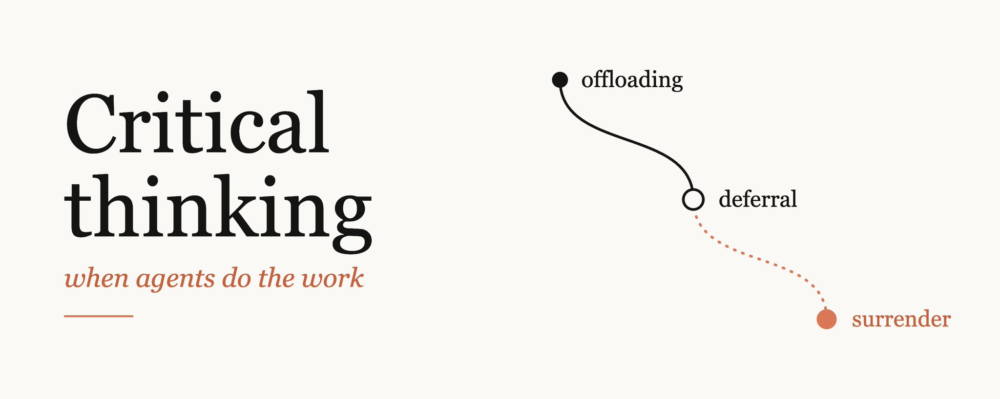
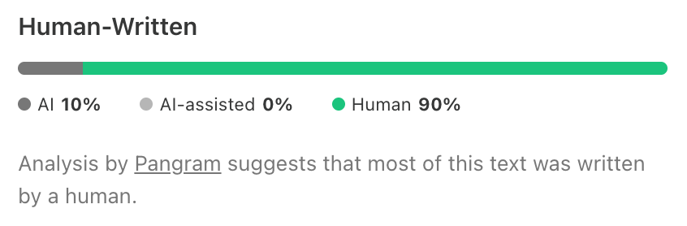

Как не отдать агенту собственное понимание задачи, когда почти вся работа идёт через него, и где делегировать без оглядки.
Чем лучше модели, тем реже их ответы требуют второго взгляда. Поэтому критическое мышление приходится встраивать в рабочий день намеренно: по умолчанию его уже ничто не запускает.

Сначала вы читаете ответ агента внимательно, потом пробегаете, потом смотрите только структуру. Каждый шаг кажется разумным, а в конце вы не можете объяснить строку собственного кода.
Выбор отеля можно отдать модели целиком. Решения о деньгах, детях, продукте и релизе оставляйте себе: последствия достанутся другим людям.
Запишите ожидаемый ответ до запуска агента. После хорошо написанного ответа другой вариант уже трудно представить.
Агенты пишут тесты почти даром. Тест с той же ошибкой, что и фича, пройдёт. Спрашивайте, что проверка доказала и чего не доказала.
Агент не остановит вас на размытой постановке: он сам заполнит пробелы и вернёт работу, похожую на готовую. Намерение должно прийти от вас.
Работу и большую часть аудита можно отдать агенту. Ответственность за то, что уходит в продакшен, отдать нельзя.
Osmani описывает работу с ИИ как спектр из трёх уровней. Различаются они одним: остаётся ли результат вашим.
Вы отдаёте задачу ИИ, но результат остаётся вашим. Автор так работает весь день и советует так же.
Вывод инструмента становится вашим входом. Результат перестаёт быть гипотезой, которую нужно проверить.
Ответ ИИ незаметно становится вашим собственным мнением, и проверять его уже не хочется. Термин ввели Steven Shaw и Gideon Nave из Wharton.
Последний ответ вы прочитали внимательно.
Поэтому следующий только пробегаете.
У третьего смотрите лишь скелет.
Вас спрашивают про строку, и вы не можете её объяснить даже с помощью агента.
Так копится cognitive debt. Margaret-Anne Storey пишет, как в командах размывается общая теория системы. Osmani называет кодовый вариант comprehension debt (термин Jeremy Twei): код выглядит чисто, тесты проходят, а проблема всплывает при первом изменении, когда систему уже никто не понимает. То же бывает с документом, у которого вы одобрили только оглавление.
Держать в голове целиком большую современную кодовую базу невозможно. Команда Claude Code восстанавливает понимание по запросу: просит Claude объяснить нужный кусок. По опыту автора, такой долг возвращается легче, чем ожидают инженеры. Важно знать, чего именно вы не понимаете.
| Когда | Что делать | Пример из статьи |
|---|---|---|
| Ошибка обходится дёшево | Делегировать целиком | Выбор одного из трёх отелей с похожим рейтингом для записи курса |
| Последствия достанутся другим | Оставить рассуждение себе | Куда вложить деньги, что посоветовать детям о карьере, что строить, кого затронет изменение, безопасно ли релизить |
Граница владения: если вы не можете объяснить ответ даже с помощью агента, вы его уже отдали.
Раньше автор возвращался к базовому списку: та ли это задача, правильно ли я её решаю, есть ли доказательства, как понять, что работа закончена. Сейчас эти вопросы легко пропустить и сразу спросить агента, поэтому Osmani переформулировал их.
Перед нетривиальной задачей запишите, хотя бы мысленно, ожидаемый ответ. Если идей нет совсем, попросите blind spot pass (приём Thariq Shihipar): дайте модели то, что знаете, и пусть она найдёт ваши неизвестные неизвестные.
Оба режима допустимы, если вы знаете, в каком из них работаете.
Найдите это. Самооценка уверенности у модели стоит меньше реального теста, так что дайте ей такой тест.
Когда автор занимает жёсткую позицию по открытому вопросу, он просит несколько моделей доказать обратное и потом формирует своё мнение. Это дольше, но тему он в итоге знает лучше.
Касается кода и любого другого результата. Для автора это и есть планка ответственности.
Например, рутинную отладку. Отпустить часть навыков нормально, но решение должно быть осознанным.
Узкое место сместилось с написания кода на уверенность в правильности результата. Если у агента есть способ проверить работу, он сам проходит цикл до того, как вы что-то увидите. Boris Cherny называет это «give Claude a way to verify its work».
Вопрос «есть ли доказательства?» превращается в «стала ли галочка зелёной?». Тест, написанный с той же ошибкой, что и фича, пройдёт. Зелёная проверка подтверждает одно свойство, а кажется, что покрывает всё.
Задним числом вы оправдаете любой исход. Поэтому финиш задаётся осязаемым артефактом: прошедший тест, скриншот, лог или trace (запись шагов агента). Получив уведомление о готовности, сначала посмотрите выполненную команду и её вывод, потом summary.
Claude Code может критиковать свою работу через subagent в свежем контексте. Автор встраивает это в цикл, чтобы шаг выполнялся всегда. В конце он спрашивает «Did I miss anything?», и frontier-модель обычно находит ещё два-три пункта.
Любимое правило автора из разбора code review в команде Claude Code: если вы не можете сказать, что пропустят проверки, просите полноценный review, а не быстрый approve.
Агент свёл пятьдесят звонков с клиентами или сделал конкурентный анализ? Откройте пару исходных документов. Пересчитайте число, на котором держится ваша рекомендация.
Агент присылает PR на 600 строк. Вы смотрите структуру, имена переменных выглядят разумно, тесты проходят, и вы одобряете. Где-то в середине поменялся порядок операций на границе транзакции или перевернулось значение по умолчанию в крайнем случае. Ревью было, но нашло только то, что вы заранее ожидали найти.
Писать код и ревьюить его — разные навыки, и ревью легко превращается в штамп. Читайте diff так, будто его писал не ИИ. За длинную сессию агент принимает за вас много мелких решений: значения по умолчанию, что выходит за рамки задачи, какое требование переосмыслить при конфликте двух. Попросите его перечислить решения и допущения.
Выберите несколько случайных строк и спросите себя, что делает каждая. Документ закройте и перескажите главный аргумент по памяти. Для длинных сессий есть приём: Claude пишет отчёт об изменении с квизом в конце, и правило звучит как «I only merge after I pass the quiz perfectly».
В open source-проект автора приходит много pull request. Агенты помогают понять, что пришло, что противоречит правилам проекта и где нужен человек. Решение остаётся за автором, а внимание уходит на вопрос, правильную ли задачу решает изменение.
Так автор называет разрыв между объёмом, который генерируют агенты, и объёмом, под которым вы готовы поставить имя. Если готовая работа копится быстрее, чем вы её разбираете, новая сессия не поможет. Ужесточите проверки, чтобы меньше работы требовало вас, или замедлитесь.
Сигнал перегрузки: если вы производите больше, чем можете отстоять, вы уже не ревьюите, а надеетесь.
Человеческая ментальная модель по-прежнему участвует в работе, но переехала из середины в начало и конец задачи.
Свой бриф своими словами: аудитория, что вне рамок, критерий готовности.
Заполняет всё, что вы не сказали, и возвращает результат, похожий на готовый.
Свой стандарт качества: аккуратное оформление больше ничего не говорит о качестве.
Раньше на расплывчатую просьбу кто-нибудь возражал, и вы понимали, что ещё не продумали задачу. Агент обычно не возражает. Intent debt — неявные цели, ограничения и обоснования, которых нет в артефактах. Этот долг, в отличие от других, никто не закроет за вас.
Если две итерации правок не привели к цели, перестаньте подправлять результат и перепишите промпт. По мысли автора, неясный промпт означает, что задача не ясна и вам самим.
Andy Clark различает делегирование задачи ИИ и сотрудничество с ним. При сотрудничестве промпты уточняют результат, результат уточняет следующий промпт и вашу модель задачи. Если неясно, попросите агента взять у вас интервью о том, чего он не понимает. Удачная сессия заканчивается более чёткой моделью в вашей голове.
Агенты легко передают друг другу summary предыдущего, и уже третий агент не видел исходного документа. Когда результат не дотягивает до вашей планки, запишите причину в общий конфиг, hook или тест. Так, по словам автора, накапливается вкус.
Возражение звучит так: через год-два модель найдёт всё, что нашёл бы я, зачем поддерживать навык? Osmani соглашается, что поиск ошибок всё больше уходит агентам, и сам за это выступает. Но кто-то отвечает за то, что уходит в продакшен.
Сколько доверять агенту в конкретной задаче — тоже решение человека. Ошибки моделей меняются от версии к версии, и откалиброваться можно только просматривая их работу.
Исследование Anthropic о её инженерах формулирует ловушку: чтобы контролировать Claude, нужны те самые навыки программирования, которые атрофируются от избыточного использования ИИ.
Что вы строите, зачем, кого это затронет и чем вы готовы пожертвовать. Агент поможет их продумать, но ответы за вами.
Автор не предлагает делать всё строго. Достаточно взять то, что ложится в ваш процесс.
| Как часто | Практика |
|---|---|
| Раз в неделю | Напишите немного кода без агента или сделайте одно дело, которое было бы обидно разучиться делать. Автор называет это calibration exercise и подчёркивает, что смысл не моральный. |
| Раз в месяц | Запишите, что вы перестали делать, и решите, с чем из этого вы согласны расстаться. |
| Когда встречаете непонятное | Разберитесь в теме, а не вставляйте однострочное объяснение из поиска, чтобы увидеть, где это понятие на своём месте. |
| В планировании | Внесите проверку работы агентов отдельной строкой. Она требует времени, и команды, которые делают вид, что это бесплатно, перестают её делать. |
Вопрос из старого поста автора: насколько вы будете потеряны, если ИИ исчезнет? Навыки без практики уходят быстрее, чем кажется.
Шаги собраны из финального списка автора «What to bring with you» и его практик. Отмечайте выполненное кликом.

рис. из статьи